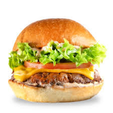

Burger Recipe
Home

Ingredients
- 1 large egg
- ½ teaspoon salt
- ½ teaspoon ground black pepper
- 1 pound ground beef
- ½ cup fine dry bread crumbs
Directions
- Step 1:Preheat an outdoor grill for high heat and lightly oil grate.
- Step 2:Whisk egg, salt, and pepper together in a medium bowl.
- Step 3:Add ground beef and breadcrumbs; mix with your hands or a fork until well blended.
- Step 4:Form into four 3/4 inch thick patties.
- Step 5: Place Patties on the preheated grill. Cover and cook 6-8 minutes per side, or to deisred doneness.
An instant read thermometer inserted into the center should be read at least 160 degress F(70 degress C).
- Step 6:Serve hot and enjoy!